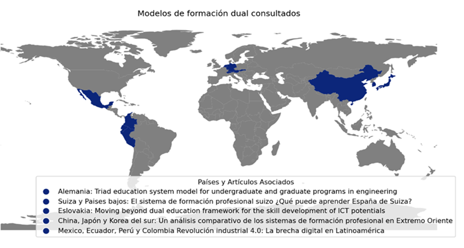
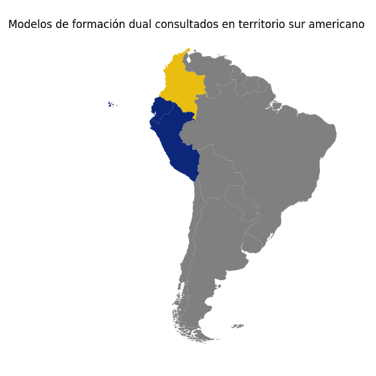
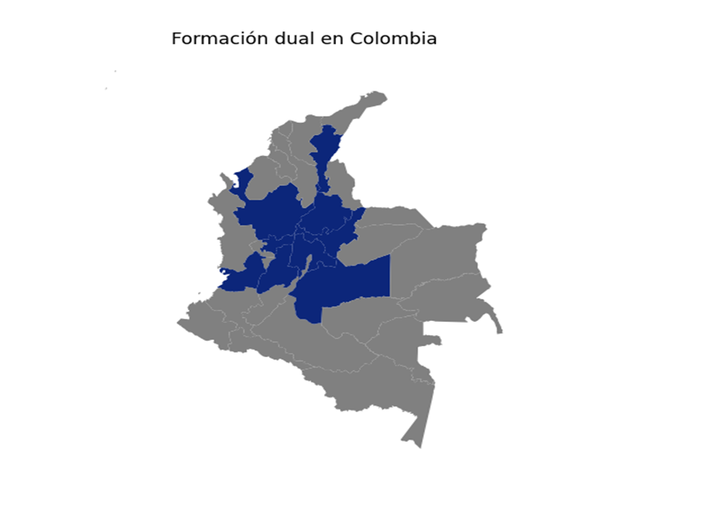

Contexto histórico y revisión global de la formación dual

-Países como Alemania, establecen como política de estado el sistema de formación dual, permitiendo a las empresas disponer de mano de obra bien cualificada (Martell-Chavez et al., 2023).
-Por su parte (Hernández Lara & Cascón Pereira, n.d.) señalan en sus estudios que países asiáticos como Japón, Corea del sur y China han diseñado modelos educativos duales que fortalecen los institutos nacionales de tecnología.
Contexto Latinoamericano

-En el contexto suramericano se plantea por parte de (Rodríguez-Alegre et al., 2021) que, en países como Perú, Ecuador y Colombia, se ha iniciado la adopción y estructuración de programas de formación dual.
-Se tiene como objetivo gestionar accesos equitativos a las competencias profesionales asociadas principalmente a las industrias 4.0.
-Se detectan brechas asociadas a la falta de normas y bajo reconocimiento del valor de la formación y pocos incentivos para la participación de las empresas en los procesos de formación dual
Contexto Colombiano y de Medellín
-En Medellín y su área metropolitana, Instituciones como el ITM han liderado la transformación en cuanto a formación dual se refiere, implementando programas que integran la teoría académica con la experiencia empresarial (Instituto tecnológico metropolitano, 2023). De manera similar, la iniciativa de CESDE-COMFAMA, en colaboración con empresas líderes en diversos sectores, como el metro de Medellín, Globant, TCC y el grupo SURA refleja un esfuerzo paralelo para fortalecer la formación dual en la ciudad (Comfama, 2022)
-Según el ministerio del trabajo colombiano (2022), desde 2001, Colombia ha implementado la modalidad dual en programas de educación superior y, a partir de 2016, en programas de formación para el trabajo.
-Las cifras del ministerio indican que hasta 2021, el distrito capital y 10 departamentos colombianos, incluyendo Antioquia, Boyacá, Caldas, Cesar, Cundinamarca, Guajira, Meta, Santander, Tolima y Valle del Cauca, ya habían implementado programas formativos en esta modalidad.
Normativa vigente:
| Ley/resolución | Descripción |
|---|---|
| Ley 1780/16 | Esta ley promueve el empleo y el emprendimiento juvenil y genera medidas para superar barreras de acceso al mercado de trabajo, entre otras disposiciones |
| Resolución 3546/18 | Emitida por el Ministerio del Trabajo, esta resolución regula las prácticas laborales. |
| Ley 1955/2019 | Conocida como el Plan Nacional de Desarrollo 2018-2022, esta ley se enfoca en Colombia y la equidad |
| Decreto 1330/19 | Este decreto único reglamentario del sector educación modifica y suprime capítulos y títulos relacionados con la regulación del sector |
| Resolución 21795/20 | Del Ministerio de Educación Nacional, establece los parámetros para la autoevaluación, verificación y evaluación de las condiciones de calidad de los programas, según lo regulado en decretos previos |
| Resolución 623/20 | Modifica parcialmente la Resolución 3546/18 y regula las relaciones formativas de práctica laboral en los sectores público y privado |
| Decreto 654/21 | También un decreto único reglamentario del sector trabajo, adopta la Clasificación Única de Ocupaciones para Colombia (CUOC) |
| Decreto 1650/21 | Este decreto reglamenta el Subsistema de Formación para el Trabajo y su Aseguramiento de la Calidad en el sector trabajo |
| Decreto 1649/21 | Como decreto único reglamentario del sector educación, adopta y reglamenta el Marco Nacional de Cualificaciones (MNC) |